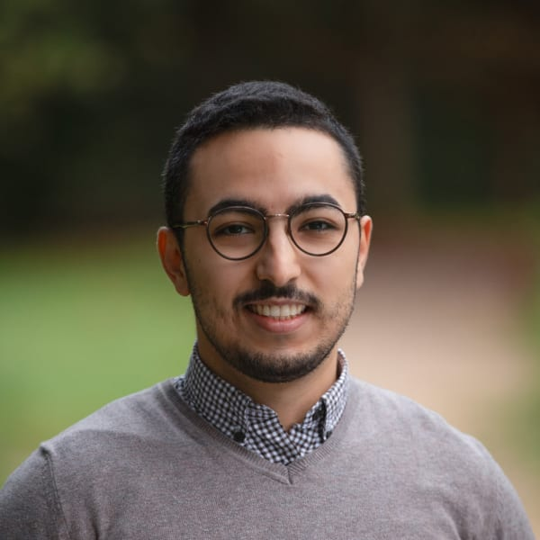

API requests per day after improving scale and stability.
Tech Lead · France
I turn technical complexity into systems and teams that scale.
I work where architecture, product context, and team reality meet. My job is to understand the whole problem, make the trade-offs clear, and help people build the right thing.

Data refresh after scoped, event-driven updates.
Complex pages delivered with a repeatable SDD workflow.
Internal and external consumers supported.
Selected work
Work that changed how the system operates.
I like difficult problems that sit between code, operations, and company needs.
01
Finding the real API bottleneck
I separated API processing time from backend wait time, improved the test tooling, monitored the most demanding routes, and profiled the outliers locally.
Capacity grew from 10M to 25M requests per day.
02
Refresh what changed, not everything
I mapped the intermediate cache dependency graph and designed a scoped, event-driven refresh workflow.
Updates that took days became available in minutes.
03
Making AI-assisted delivery repeatable
A stable Spec-Driven Development workflow helped the team move through a complete seven-page Figma rework without repeated high-token attempts.
All seven pages, including substantial logic, in two days.
How I lead
Understand first. Make the decision useful.
Understand before deciding
I look for the functional and company context, not only the technical symptom.
Make complexity discussable
I can profile a route with engineers, then explain the consequence to leadership without hiding behind jargon.
Improve the team
I document decisions, share what I learn, and spend time with newcomers until they can move independently.
Give new ideas a fair test
I look for a concrete problem, build a method the team can inspect, and keep what proves useful.
A detail that matters
“People sometimes call me the master of naming. A good name can clarify an API contract and the conversation around it.”
API Days Paris · 2023
Forget TypeScript. Choose Rust to build robust, fast, and cheap APIs.
Watch the talk ↗About
A broad technical range, on purpose.
I’ve worked across frontend, APIs, cloud infrastructure, performance, distributed systems, architecture, and AI-assisted engineering.
The common thread is curiosity. I need to understand how the pieces fit before I decide what the code should do.